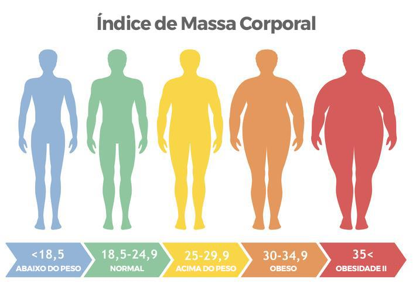

Bem-vindo à nossa Calculadora de IMC!
O cálculo do IMC é a principal avaliação para saber o estágio do sobrepeso (ou baixo peso) do paciente ou qual é a quantidade de calorias indicada para manter, perder ou ganhar
peso - no caso de prescrição de dietas.
A fórmula básica é simples: divida seu peso pela sua altura ao quadrado.
